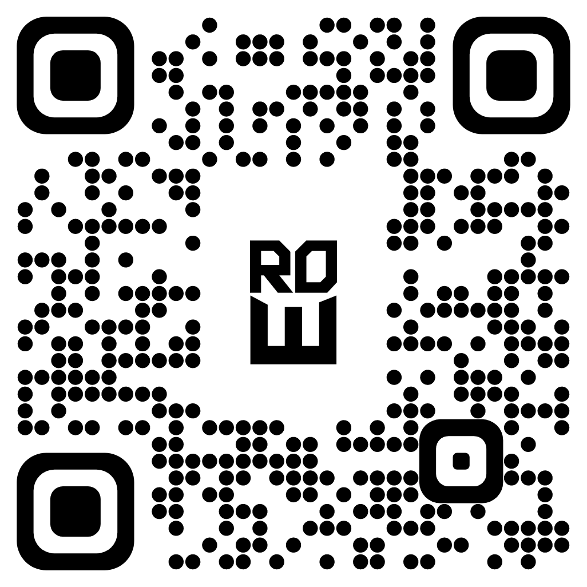

Registrations For the Competition
Registration Procedures
🔰 Online registrations for the quiz competition will be conducted from 13.11.2022 midnight to 29.11.2022 midnight.
🔰 Registrations can be done by either logging into the official webpage of Kingswood Astronomical Society or scanning the below QR code.
Link:https://forms.gle/jfsyFY74t4kWBvYH7
🔰 A team should be composed of 5 members, and 2 groups from a school can apply for the competition. (If more than one team is registered, it should be introduced, e.g., Kingswood A, Kingswood B)
🔰 All information that you enter should be correct. (Our society is not responsible for the issues which occur due to false information)
🔰 Every competitor willing to participate in the quiz competition must be born after 31.01.2003.
🔰 The leader of the team should join our official WhatsApp group through the link, which will be displayed after registrations.
🔰 For any difficulties or issues with registrations contact the below numbers via WhatsApp.
+94771160731 - Yasanjith Bandara ( President )
+94704443670 - Gangasara Jayawickrama ( Secretary )
ලියාපදිංචි කටයුතු
🔰 තරගාවලිය සඳහා ලියාපදිංචි කටයුතු 2022.11.23 වන දින මධ්යම රාත්රී 12.00 සිට 2022.11.29 වන දින මධ්යම රාත්රී 12.00 දක්වා මාර්ගගත අන්දමින් සිදු කරනු ලැබේ.
🔰 කිංස්වුඩ් විද්යාලයීය තාරකා විද්යා සංගමයේ නිල වෙබ් පිටුව ඔස්සේ හෝ පහත දක්වා ඇති QR කේතය පරිලෝකනය ( Scan) කිරීම මගින් ඔබට මාර්ගගත ලියාපදිංචිය සිදු කළ හැක.
Link:https://forms.gle/jfsyFY74t4kWBvYH7
🔰 කණ්ඩායමක සිටිය හැකි සාමාජිකයන් සංඛ්යාව 5 ක් වන අතර එක් පාසලකින් කණ්ඩායම් 2 ක් ඉදිරිපත් විය හැක. එක් පාසලකින් කණ්ඩායම් දෙකක් ඉදිරිපත් වන්නේ නම් ඒවා නිවැරදිව සඳහන් කළ යුතු ය . ( උදාහරණ - කිංස්වුඩ් A, කිංස්වුඩ් B )
🔰 සෑම කණ්ඩායමක්ම තරගාවලිය සඳහා ලියාපදිංචි වීමේ දී සත්ය තොරතුරු ලබා දිය යුතු ය. සාවද්ය තොරතුරු ලබා දීම නිසා ඇතිවන ගැටලු පිළිබඳව වගකීම අප සංගමය විසින් භාරගනු නොලැෙබේ.
🔰 තරගකරුවන් සියලු දෙනා 2003.01.31 දිනට පසු උපන් අය විය යුතු ය.
🔰 ලියාපදිංචි වීමෙන් අනතුරුව දිස්වන සබැඳිය ඔස්සේ කණ්ඩායම් නායකයා පමණක් අදාළ වට්ස්ඇප් සමූහය වෙත සම්බන්ධ විය යුතු ය.
🔰 ලියාපදිංචි කටයුතු පිළිබඳ යම් ගැටළුවක් වේ නම් පහත දූරකථන අංක ඔස්සේ වට්ස්ඇප් මගින් අප සංවිධායක කමිටුව සම්බන්ධ කර ගත හැක.
+94771160731 - යසන්ජිත් බණ්ඩාර ( සභාපති )
+94704443670 - ගඟසර ජයවික්රම ( ලේකම් )
First Round
Rules and Regulations
🔰 This round will be held on Wednesday, 30.11.2022 at 8:00 p.m. to 9:00 p.m.
🔰 Questions will be directed from Astrophysics, Observational astronomy, Cosmology, rocketry and general astronomy.And the paper will consist of 40 MCQs, and 2 structured essays typed questions.
🔰 The team should answer the MCQs on the paper itself, and answers for the second paper(structured essay) can be submitted by uploading them as a PDF.
🔰 When you join us via ZOOM meeting throughout the competition period, please be kind enough to rename it according to the way mentioned by our organizing committee.
🔰 Video Cameras should be activated throughout the competition period.
🔰 You will be added in to Break Out Rooms by the organizing committee and one team member should complete the answering.
🔰 we will give the ability to share screens as a communication media in break-out rooms ( Communication from other ways are not allowed.)
🔰 In case of violation of the competition rules, decisions will be taken by the organizing committee about that team.
🔰 Competitors can submit answers until 9:15 p.m.
🔰 Seeking technical support or third-party assistance to answer the contest will disqualify your team.
🔰 Technical assistance regarding the competition will be provided by the members of the organizing committee.
🔰 Contact the below numbers for any issues regarding the competition.
+94771160731 - Yasanjith Bandara ( President )
+94704443670 - Gangasara Jayawickrama ( Secretary )
නීති රීති
🔰 මෙම තරග වටය 2022/11/30 වන බදාදා දින පස්වරු 08.00 සිට 09.00 දක්වා පැවැත්වෙනු ඇත.
🔰 තාරකා භෞතික විද්යාව, නිරීක්ෂණ තාරකා විද්යාව, විශ්ව න්යාය විද්යාව, රොකට් තාක්ෂණය සහ සාමාන්ය තාරකා විද්යාව යන විෂය ක්ෂේත්රයන්ගේ සම්මිශ්රණයක් ලෙසින් බහුවරණ ප්රශ්න 40 කින් සමන්විත පළමු ප්රශ්න පත්රයක් සහ ව්යුහගත රචනා ප්රශ්නයකින් සමන්විත දෙවන ප්රශ්න පත්රයක් ඔබට හිමි වේ.
🔰 සියලු ම බහුවරණ ප්රශ්න සඳහා පිළිතුරු සැපයීම අදාළ ප්රශ්න පත්රය තුළ ම සිදු කළ යුතු අතර දෙවන ප්රශ්න පත්රය සඳහා පිළිතුරු සැපයීමේ දී වෙන ම පත්රවල පිළිතුරු ලියා PDF ගොනු ලෙස උඩුගත කළ යුතු ය.
🔰 තරග කාලසීමාව තුළ ඔබව සංවිධායක කමිටුව විසින් ගනු ලබන Zoom හමුව වෙත සම්බන්ධ කර ගනු ලබන අතර, ඒ සඳහා සම්බන්ධ වීමේ දී සංවිධායක කමිටුව විසින් දන්වන පරිදි පුනර්-නාමකරණය සිදු කළ යුතු ය.
🔰 තරග කාලසීමාව තුළ තම වීඩියෝ කැමරාව සක්රිය කළ යුතු ය.
🔰 කණ්ඩායම් මට්ටමින් ඔබව Break-Out Rooms වෙත ඇතුළත් කරගනු ලබන අතර එහිදී එක් සාමාජිකයකු ( කණ්ඩායම් නායකයා නම් හෝ වෙනත් එක් සාමාජිකයෙකු ) පමණ ක් ප්රශ්න පත්රයට පිළිතුරු සැපයිය යුතු ය.
🔰 Break Out Room තුළ තිර සමර්පණ ( Screen Sharing ) පහසුකම් ලබා දෙනු ලබන අතර වෙනත් ක්රමවේද භාවිතා කරමින් සන්නිවේදනය කිරීම සපුරා තහනම් වේ.
🔰 තරග නීති රීති උල්ලංඝනය කිරීමකදී එම කණ්ඩායම පිළිබඳ සංවිධායක කමිටුව විසින් තීරණ ගනු ලැබේ.
🔰 පිළිතුරු සැපයීම් කාලයෙන් අනතුරුව පස්වරු 9.15 දක්වා පිළිතුරු පත්ර උඩුගත කිරීමට කාලය හිමි වන අතර, ඉන් පසුව උඩුගත කරනු ලබන පිළිතුරු පත්ර භාරගනු නොලැබේ.
🔰 තරගය සඳහා පිළිතුරු සැපයීමට තාක්ෂණික සහයන් ලබා ගැනීම හෝ තෙවන පාර්ශවයක සහය ලබා ගැනීම ඔබව තරගයෙන් ඉවත් කිරීම ට හේතු වනු ඇත.
🔰 තරග කාලසීමාව තුළ තාක්ෂණික ගැටළුවක් ඇති වූවහොත් ඒ පිළිබඳ එදිනට ලබා දෙන දූරකථන අංකයන් හැකි ඉක්මනින් දැනුම්වත් කළ යුතු ය.
🔰 තරග වටය පිළීබඳ යම් ගැටළුවක් වේ නම් පහත දුරකතන අංක මගින් වට්ස්ඇප් ඔස්සේ විමසන්න.
+94771160731 - යසන්ජිත් බණ්ඩාර ( සභාපති )
+94704443670 - ගඟසර ජයවික්රම ( ලේකම් )
Second & Final Rounds
Rules and Regulations
🔰 For these rounds, 15 teams who get the highest points from the first round will qualify for the second round, and the competitions will be held on the "Region Of Exotica" 22nd Astronomy Night.
ලියාපදිංචි කටයුතු
🔰 මෙම තරග වට සඳහා පළමු තරග වටයෙන් ඉහළ ලකුණූ ලබා ගන්නා කණ්ඩායම් 15 ක් දෙවන වටය සඳහා සුදුසුකම් ලබන අතර එම තරග කටයුතු Region Of Exotica"22 තාරකා විද්යා රාත්රිය දිනයේ දී පවත්වනු ලැබේ.